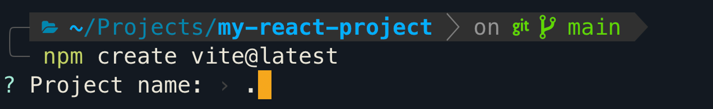
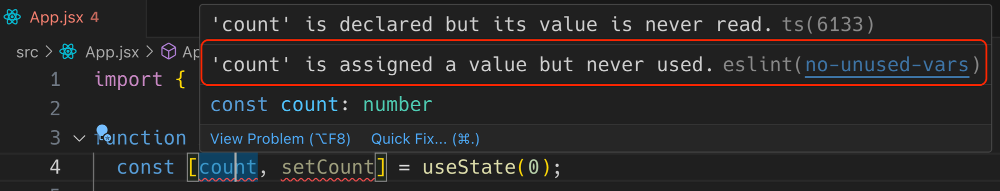
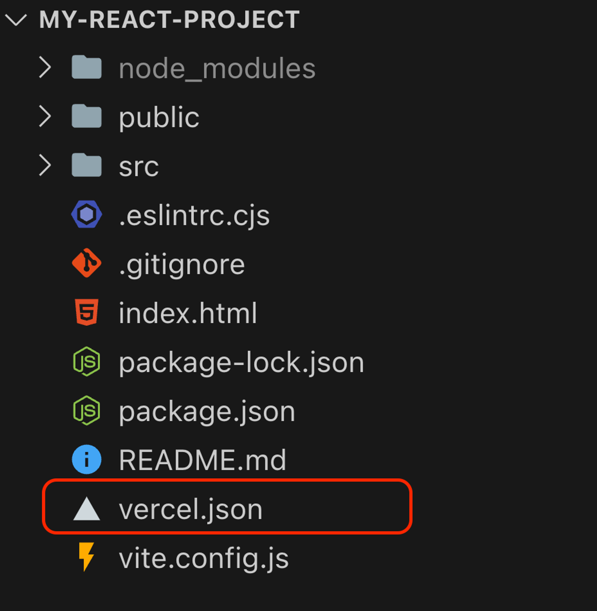

1.1 Tworzenie projektu
Aby utworzyć projekt, należy wykonać kilka kroków:
- Utwórz puste repozytorium (projekt) na GitHub.
- Sklonuj to repozytorium na swój komputer.
-
Otwórz terminal i przejdź do folderu, w którym znajduje się sklonowane repozytorium.
- Rozpocznij tworzenie projektu React.
Aby utworzyć projekt, użyjemy zestawu 📖 Vite
-
Automatyzuje całą konfigurację projektu, pozwalając Ci skupić się na pisaniu kodu.
- Zawiera niezbędne narzędzia, takie jak ESLint.
- Umożliwia rozszerzenia o dodatkowe pakiety z ekosystemu React.
Umożliwia rozszerzenia o dodatkowe pakiety z ekosystemu React.
Aby utworzyć nowy projekt, z folderu projektu w terminalu uruchom polecenie i postępuj
zgodnie z instrukcjami. Użyj klawiszy w górę / w dół, aby poruszać się po opcjach i
Enter, aby potwierdzić wybór.
npm create vite@latest
Gdy zostaniesz poproszony o podanie nazwy projektu, wpisz kropkę i naciśnij Enter.
Oznacza to, że chcemy utworzyć projekt w bieżącym folderze.

Po utworzeniu projektu postępuj zgodnie z instrukcjami.
- Zainstaluj zależności projektu za pomocą polecenia npm install;
- Uruchom projekt za pomocą polecenia npm run dev;
Obejrzyj film na temat tworzenia projektu React za pomocą Vite.
Jeśli masz już skonfigurowane automatyczne formatowanie za pomocą Prettier w edytorze,
wystarczy dodać jego plik ustawień do katalogu głównego projektu.
1.2 Konfiguracja ESLint
Projekt utworzony za pomocą Vite ma już skonfigurowany linting do sprawdzania jakości
kodu. Aby uzyskać wizualną informację zwrotną od lintera w edytorze VSCode, należy dodać
rozszerzenie ESLint.
Części kodu, które nie spełniają standardów jakości, zostaną podświetlone żółtymi
(ostrzeżenie) lub czerwonymi (błąd) przerywanymi liniami. Gdy najedziesz myszką na
przerywaną linię, pojawi się podpowiedź z opisem problemu.

Ostatnim krokiem jest wprowadzenie niewielkiej zmiany w ustawieniach lintera ESLint. W
pliku konfiguracyjnym .eslintrc.cjs musimy wyłączyć jedną niepotrzebną regułę. W
szczególności musimy dodać do bloku rules właściwość react/prop-types z wartością 0.
Możesz po prostu skopiować poniższy kod, który zawiera niezbędne ustawienia i zastąpić
nim zawartość .eslintrc.cjs.
module.exports = {
root: true,
env: { browser: true, es2020: true },
extends: [
"eslint:recommended",
"plugin:react/recommended",
"plugin:react/jsx-runtime",
"plugin:react-hooks/recommended",
],
ignorePatterns: ["dist", ".eslintrc.cjs"],
parserOptions: { ecmaVersion: "latest", sourceType: "module" },
settings: { react: { version: "18.2" } },
plugins: ["react-refresh"],
rules: {
"react/prop-types": 0,
"react-refresh/only-export-components": [
"warn",
{ allowConstantExport: true },
],
},
};
1.3 Konfiguracja Vite
Kod projektu jest domyślnie zminimalizowany i zaciemniony w produkcji, aby
zoptymalizować ładowanie aplikacji. Może to jednak utrudniać mentorowi przeglądanie kodu
podczas oceniania pracy domowej na stronie na żywo.
Source Map — to narzędzie, które umożliwia mapowanie przetłumaczonego lub
zminimalizowanego kodu na kod źródłowy, który jest łatwy do przeglądania w narzędziach
programistycznych przeglądarki. Zapewnia możliwość przeglądania czytelnego kodu nawet po
kompilacji.
Dodaj opcję generowania map źródłowych do pliku ustawień Vite znajdującego się w
folderze głównym projektu. Otwórz plik vite.config.js i zastąp jego zawartość
następującym kodem:
import { defineConfig } from "vite";
import react from "@vitejs/plugin-react";
//
export default defineConfig({
plugins: [react()],
build: {
sourcemap: true,
},
});
1.4 Wdrożenie na Vercel
Aby po wdrożeniu na Vercel aplikacja z routingiem działała poprawnie należy dodać plik
konfiguracyjny vercel.json do głównego folderu projektu.

Zawartość pliku vercel.json powinna wyglądać następująco:
{
"rewrites": [
{"source": "/(.*)", "destination": "/"}
]
}
Można to zrobić zarówno podczas początkowej konfiguracji projektu, jak i później, na
przykład przed pierwszym wdrożeniem. W każdym przypadku, po utworzeniu i wypełnieniu
pliku vercel.json, należy wykonać zatwierdzenie Git i wysłać zmiany do repozytorium
GitHub, aby Vercel rozpoczął proces kompilacji projektu z już dodanym plikiem
konfiguracyjnym.
Dlaczego jest to potrzebne?
Domyślnie, gdy otwierasz stronę aplikacji internetowej w przeglądarce, serwer Vercel
(hosting) próbuje znaleźć plik HTML odpowiadający ścieżce.
Czyli jeśli wejdziemy na adres:
- my-app.com — hosting spróbuje zwrócić index.html;
- my-app.com/about — hosting spróbuje zwrócić about.html;
- my-app.com/profile — hosting spróbuje zwrócić profile.html i tak dalej.
W naszej aplikacji React mamy tylko plik index.html, a kiedy nawigujemy do adresu, adres
URL zmienia się, a zawartość pliku index.html jest aktualizowana, co oznacza, że inne
komponenty w tym samym pliku HTML są renderowane. Potrzebujemy, aby serwer zawsze
zwracał plik index.html, po czym React Router przejmował kontrolę i rozpoczynał
renderowanie komponentów strony dla bieżącego adresu URL.
Z tego powodu dodaliśmy plik vercel.json, aby poinformować Vercel, że mamy SPA (Single
Page Application) z routingiem, a każdy adres URL powinien zwracać index.html.